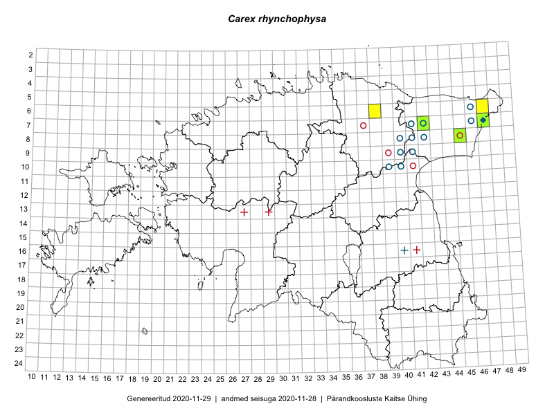

Carex rhynchophysa
Uuendatud: 2016-12-02
Kaardile koondatud taksonid: Carex rhynchophysa Fisch., C.A.Mey. & AvéLall.

Kaart põhineb 6 vaatlusel. Taksonit on leitud 3 ruudust.
Viited andmebaasikirjetele